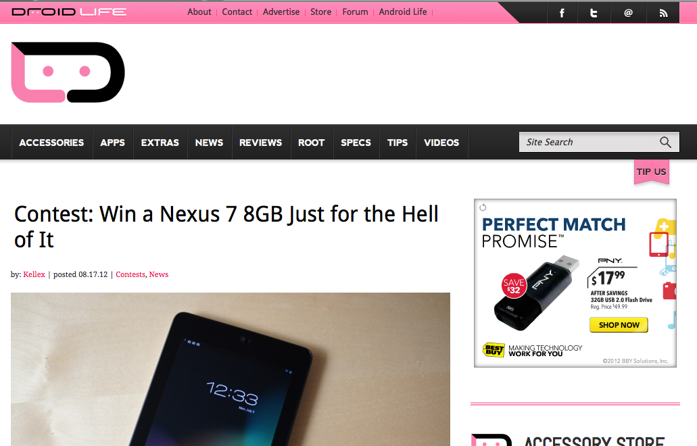

IGN is a website that focuses in on anything involving games whether it is reviews, trailers, or cheats.
They did not pass the section 508 test due to mostly blank alt tags in the image which can be easily fixed. It also fails the WCAG 2.0 test due to not providing alt text for their images mostly. All of these can easily be fixed by filling in the alternate text.
This website is a form of blog that deals with all the latest technology ranging from smartphones, tablets, and computers but also others.
They did not pass the section 508 test due to mostly blank alt tags in the image which can be easily fixed. It also fails the WCAG 2.0 test due to not providing alt text for their images mostly but it also has a failure due to contrasting colors being represented poorly. All of these can easily be fixed by filling in the alternate text.
This site is used for android enthusiasts who like to see the most cutting edge of technology in the android world. It includes smartphone reviews, tablets, and other stuff.
They did not pass the section 508 test due to mostly blank alt tags in the image which can be easily fixed. It also fails the WCAG 2.0 test due to not providing alt text for their images mostly but it also has a failure due to contrasting colors being represented poorly. There are a few anchors with no text as well. All of these can easily be fixed by filling in the alternate text and double checking code for the website.
This website is basically an online catalogue for all kinds of technology you can buy.
This site passes the WCAG 2.0 verification test but does not pass the section 508 test due to a few images that do not contain alt or long description attributes.